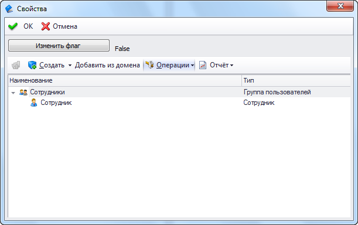

Пользовательский элемент управления |
В T-FLEX DOCs есть возможность создавать пользовательские элементы управления для использования в диалогах и пользовательских страницах. Ниже приведен пример создания такого элемента управления.
Элемент управления

C#
/* Дополнительные библиотеки System.Drawing.dll System.Windows.Forms.dll TFlex.DOCs.Model.dll TFlex.DOCs.UI.Common.dll TFlex.DOCs.UI.Controls.dll TFlex.DOCs.UI.Objects.dll TFlex.DOCs.UI.Types.dll*/ using System; using System.ComponentModel; using System.Windows.Forms; using System.Xml.Serialization; using TFlex.DOCs.Model; using TFlex.DOCs.Model.Configuration; using TFlex.DOCs.Model.References.Users; using TFlex.DOCs.UI.Common; using TFlex.DOCs.UI.Controls.References; using TFlex.DOCs.UI.Objects.ReferenceModel; using TFlex.DOCs.UI.Objects.ReferenceModel.VisualRepresentation; using TFlex.DOCs.UI.Objects.Settings; using TFlex.DOCs.Model.References; namespace TFlex.DOCs.UI.Controls.LayoutControls { public class ExampleLayoutControlUserControl : // Наследуемся от BaseUserControl т.к. там реализован интерфейс IControl, т.е. чтение/сохранение настроек Templates.BaseUserControl, IUserLayoutControlItem { private Label _settingsLabel; private Panel _usersGroupControl; private Button _showUsersButton; private readonly IContainer components = null; public ExampleLayoutControlUserControl() { // Добавляем описание настроек для работы сериализатора XmlSerializerManager.RegisterTypes(new[] { typeof(ExampleLayoutControlUserControlSettingsData) }); InitializeComponent(); CreateVisualRepresentationControl(); } // Обработчик события нажатия на кнопку. Создает элемент управления со справочными данными private void _showUsersButton_Click(object sender, EventArgs e) { UserSettingsFlag = !UserSettingsFlag; _settingsLabel.Text = UserSettingsFlag.ToString(); } // Создает элемент управления со справочными данными private void CreateVisualRepresentationControl() { VisualRepresentationControl = new ReferenceVisualRepresentationControl(); _usersGroupControl.Controls.Add(VisualRepresentationControl); } // Инициализирует элемент управления со справочными данными private void InitializeVisualRepresentationControl() { if (VisualRepresentationControl == null) return; VisualRepresentationControl.Dock = DockStyle.Fill; VisualRepresentationControl.SupportAsyncImplement = false; VisualRepresentationControl.SetApplicationFormView(Application); VisualRepresentationControl.CreateTreeVisualRepresentation(ServerGateway.Connection.References.Users, GetCurrentParentObject()); VisualRepresentation.IsReadOnlyControl = VisualRepresentation.IsReadOnlyObjects = ReadOnly; VisualRepresentationControl.Initialize(); } // Возвращает элемент управления со справочными данными public ReferenceVisualRepresentationControl VisualRepresentationControl { get; private set; } // Возвращает визуальное представление справочника public IReferenceCompositeVisualRepresentation VisualRepresentation { get { return VisualRepresentationControl == null ? null : VisualRepresentationControl.VisualRepresentation; } } // Возвращает первую группу пользователей, в которую входит автор редактируемого объекта private ReferenceObject GetCurrentParentObject() { ReferenceObject parentObject = null; if (ReferenceUIObject != null) { User author = ReferenceUIObject.ReferenceObject.SystemFields.Author; parentObject = author.Parent; } return parentObject; } // Вызывается при изменении редактируемого объекта для обновления данных в элементе управления private void OnChangedParent() { if (VisualRepresentation == null) return; VisualRepresentation.SetRootObject(GetCurrentParentObject()); VisualRepresentation.IsReadOnlyControl = VisualRepresentation.IsReadOnlyObjects = ReadOnly; VisualRepresentation.Refresh(true); } protected override void Dispose(bool disposing) { if (disposing) { if (components != null) components.Dispose(); if (VisualRepresentationControl != null) { VisualRepresentationControl.Dispose(); VisualRepresentationControl = null; } } base.Dispose(disposing); } #region IUserLayoutControlItem Members // Возвращает или задает главное окно приложения public IApplicationFormView Application { get; set; } // Возвращает или задает объект, для которого отображаются свойства в элементе управления public IReferenceUIObject ReferenceUIObject { get; set; } // Возвращает или задает значение, указывающее, является ли элемент управления доступным только для чтения public bool ReadOnly { get; set; } // Выполняется при инициализации элемента управления public void Initialize() { InitializeVisualRepresentationControl(); _settingsLabel.Text = UserSettingsFlag.ToString(); } #endregion #region ILayoutControlSupportReload Members // Вызывается при обновлении объекта, свойства которого отображаются в элементе управления public void RefreshData() { if (VisualRepresentation != null) VisualRepresentation.Refresh(true); } // Вызывается при изменении объекта, свойства которого отображаются в элементе управления // changeUiObject - Измененный объект // context - Контекст вызова. Содержит данные о строке в списке или узле в дереве, который отображает данный объект // isReadOnly - Значение, указывающее, является ли элемент управления доступным только для чтения public void Reload(IDesktopUIObject changeUiObject, Templates.ControlActionContext context, bool isReadOnly) { ReferenceUIObject = changeUiObject as IReferenceUIObject; ReadOnly = isReadOnly; OnChangedParent(); } #endregion #region Пример работы с настройками // Флаг для сохранения в настройках элемента управления public bool UserSettingsFlag { get; private set; } protected override IControlSettings CreateSettings() { return new PersistControlSettings<ExampleLayoutControlUserControlSettingsData>(this); } // Возвращает экземпляр класса для работы с настройками элемента управления [Browsable(false), DesignerSerializationVisibility(DesignerSerializationVisibility.Hidden)] public new ExampleLayoutControlUserControlSettingsData SettingsData { get { return Settings.Data as ExampleLayoutControlUserControlSettingsData; } } // Сохраняет настройки элемента управления public override void SaveSettings() { SettingsData.UserFlag = UserSettingsFlag; base.SaveSettings(); } // Загружает настройки элемента управления public override void LoadSettings() { base.LoadSettings(); UserSettingsFlag = SettingsData.UserFlag; } // Класс для сохранения настроек элемента управления [XmlType("ExampleLayoutControlUserControlSettings")] public class ExampleLayoutControlUserControlSettingsData : PersistControlSettingsData { public ExampleLayoutControlUserControlSettingsData() { UserFlag = true; } [XmlAttribute] [DefaultValue(true)] public bool UserFlag { get; set; } } #endregion private void InitializeComponent() { _showUsersButton = new Button(); _settingsLabel = new Label(); _usersGroupControl = new Panel(); SuspendLayout(); // // _showUsersButton // _showUsersButton.Location = new System.Drawing.Point(0, 0); _showUsersButton.Name = "_showUsersButton"; _showUsersButton.Size = new System.Drawing.Size(175, 23); _showUsersButton.TabIndex = 0; _showUsersButton.Text = "Изменить флаг"; _showUsersButton.UseVisualStyleBackColor = true; _showUsersButton.Click += _showUsersButton_Click; // // _settingsLabel // _settingsLabel.AutoSize = true; _settingsLabel.Location = new System.Drawing.Point(181, 10); _settingsLabel.Name = "_settingsLabel"; _settingsLabel.Size = new System.Drawing.Size(35, 13); _settingsLabel.TabIndex = 0; _settingsLabel.Text = "label1"; // // _usersGroupControl // _usersGroupControl.Anchor = AnchorStyles.Top | AnchorStyles.Bottom | AnchorStyles.Left | AnchorStyles.Right; _usersGroupControl.AutoSize = true; _usersGroupControl.Location = new System.Drawing.Point(0, 30); _usersGroupControl.Name = "_usersGroupControl"; _usersGroupControl.Size = new System.Drawing.Size(285, 233); _usersGroupControl.TabIndex = 0; // // ExampleLayoutControlUserControl // ClientSize = new System.Drawing.Size(284, 262); Controls.Add(_showUsersButton); Controls.Add(_settingsLabel); Controls.Add(_usersGroupControl); Name = "ExampleLayoutControlUserControl"; ResumeLayout(false); PerformLayout(); } } }